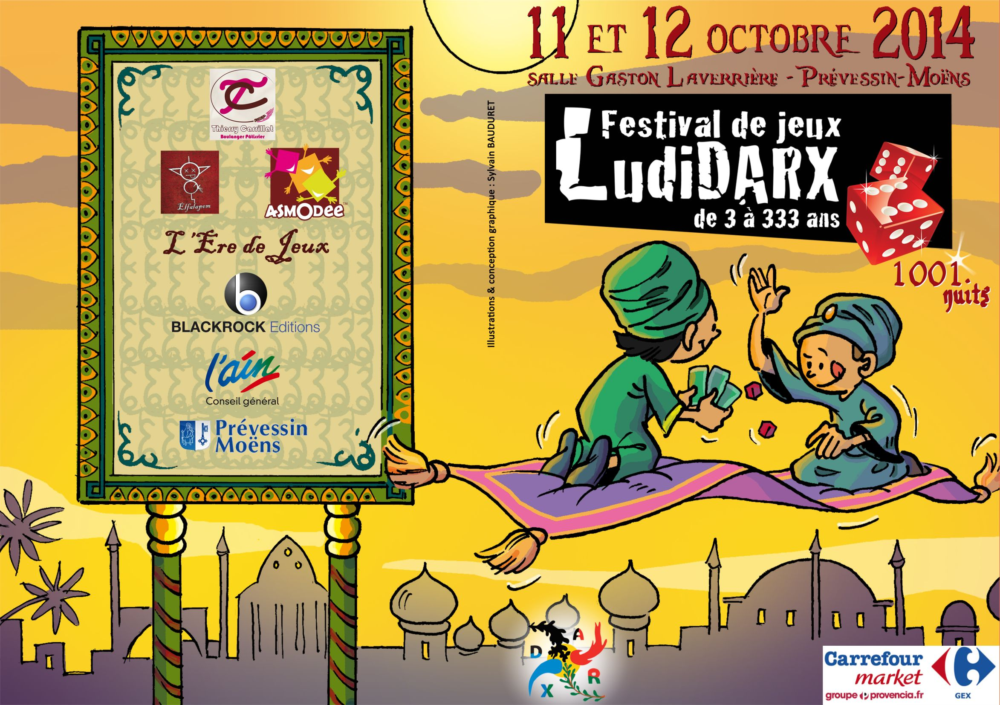
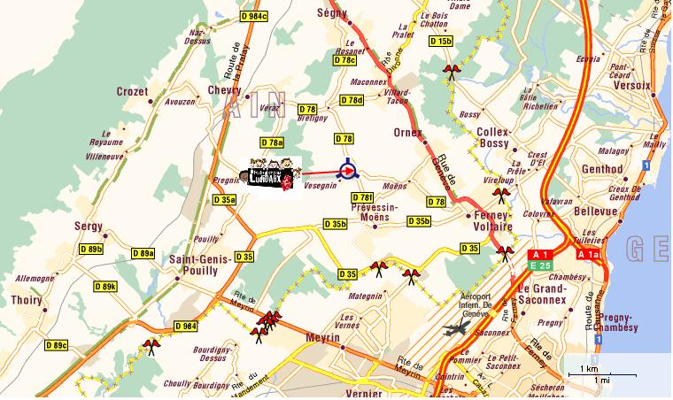

Les DARX Fantastiques

Pour cet évènement, entièrement gratuit, axé autour du jeu de société « Les DARX Fantastiques » souhaitent permettre aux participants de découvrir l’univers riche et varié du jeu et cela notamment grâce à la présence de nombreux partenaires mais aussi favoriser la rencontre et les échanges entre les générations par la mise en place d’activités ludiques.
Voici les activités organisées :
- A DECOUVRIR TOUT LE WEEK-END (sam. de 11h à 2h, dim. de 10h à 18h)
- Jeux de société contemporains
- Jeux en bois
- A DECOUVRIR TOUTE LA JOURNEE (sam. de 11h à 18h, dim. de 10h à 18h)
- Village des petits
- Arène (Elfalapom)
- Initiation aux grands jeux
- Jeu d’échecs (seulement le samedi)
- Initiation au jeu de Go (Ko Go Club)
- Quête des petits (3 à 6 ans)
- Vente de jeux (L’Ère du jeu)
- Tombola
- Buvette
- A NE PAS MANQUER :
- Tournoi de Magic ® : (début des inscriptions) 11h sam et dim
- Initiation aux échecs : sam 11h - 12h
- Maquillage (Animagic) : sam 14h-18h, dim 13h-17h
- Atelier de fabrication de jeux en bois (Soyons Vieux Jeux) : sam 14h, dim 13h
- Découverte du Mölkky (jeu en bois finlandais) : sam 15h, dim 14h
- Chasse au trésor (à partir de 7 ans) : sam 16h, dim 15h
- Spectacle de marionnettes (Il était une fois une marionnette,..à partir de 4 ans) : sam 17h, dim 16h
- Repas complet (prix : 8€) : sam 19h – 21h :
QUAND ?
Samedi 11 octobre 2014 de 11h à 02h du matin
et Dimanche 12 octobre 2014 de 10h à 18h
OÙ ?
salle Gaston Laverrière, Prévessin-Moëns (01)

Coordonnées
Association Les DARX Fantastiques
Présidente : Nathalie Passe
Adresse du siège social : 72, Chemin des Tattes du Moulin
01280 Prévessin-Moëns
Téléphone Pdte : 06 45 73 63 74